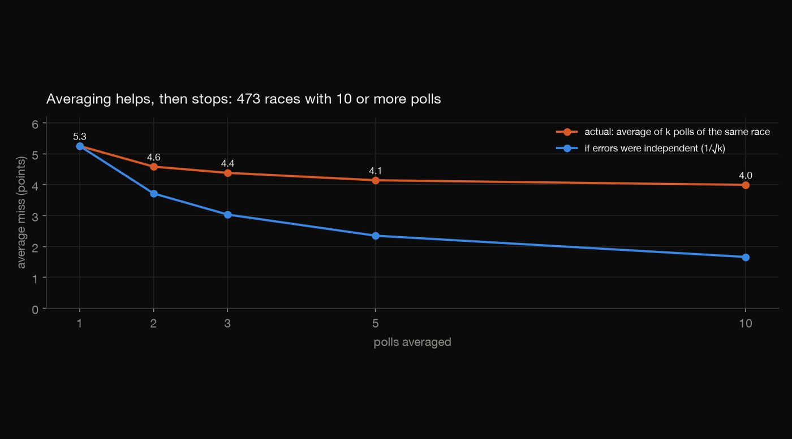
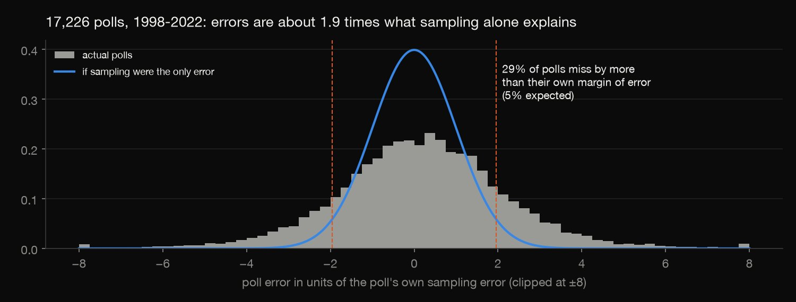
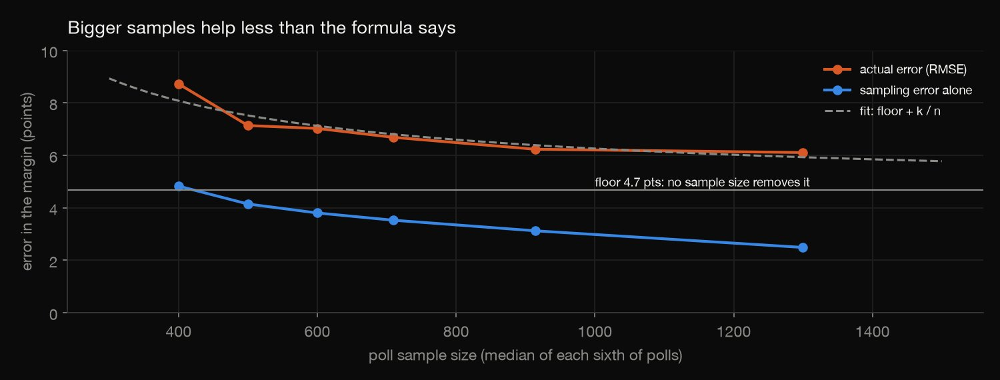
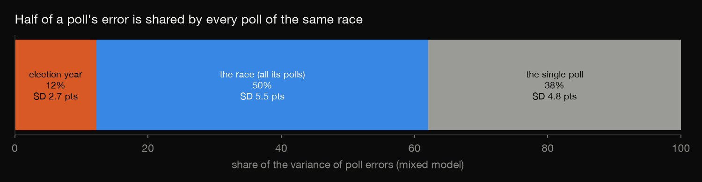
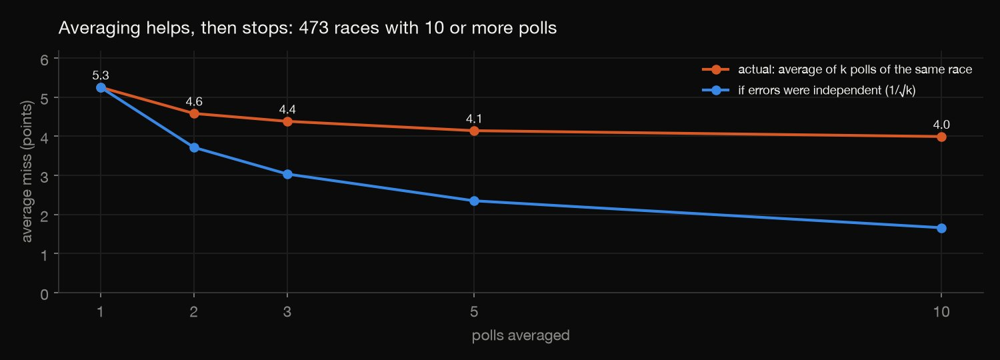
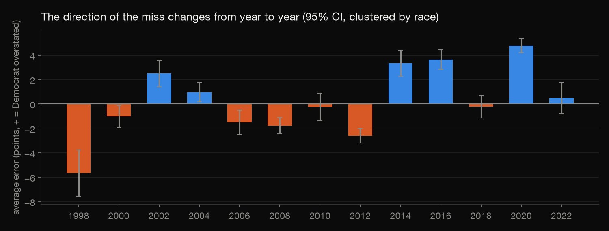

Statistics · Survey error · 2026-10
How Wrong Are Election Polls?
17,226 general-election polls from 1998 to 2022, checked against the results they predicted: errors twice the stated margin of error, a floor that no sample size removes, and why averaging polls helps less than it should.

FiveThirtyEight's database ends in 2023, so 2024 isn't included. Pollster quality and house effects are not adjusted for.
01 — The problem
Every poll comes with a margin of error, usually ±3 to ±5 points. Readers, campaigns and newsrooms treat it as the range the truth will fall in.
Does it? How big are real poll errors, why don't bigger samples fix them, and how much does averaging many polls really help?
02 — What I built
A statistical audit of FiveThirtyEight's pollster-ratings database: 17,226 Democrat-vs-Republican polls for president, Senate, governor and House, from 2,135 races between 1998 and 2022, each with the actual result.
- Each poll's error, set against its own sampling error.
- A fit of squared error on 1/n, to find the error that sample size can't remove.
- A mixed model splitting error into year, race and poll.
- Bias by cycle, with confidence intervals clustered by race.
- A simulation of averaging k polls.
- Everything recomputed in R.
03 — How it was built
- 01
Measure each poll against its own promise
A poll's sampling error of the D−R margin follows from its shares and sample size. Its stated margin of error is 1.96 times that, so about 5% of polls should miss by more. In fact 29% do. The typical miss (RMSE) is 7.0 points, against 3.7 if sampling were the only source of error: 1.9 times as large.

d["sampling_se"] = 100 * np.sqrt((p1 + p2 - (p1 - p2) ** 2) / d["samplesize"]) - 02
Ask what sample size can fix
If error were only sampling, squared error would fall in proportion to 1/n. Fitting squared error = floor + k/n leaves a floor of 4.7 points that no sample size removes. Errors do fall from 8.7 points for polls of about 400 people to 6.1 for about 1,300, but they never approach the sampling-only line.

m = smf.ols("I(error ** 2) ~ inv_n", d).fit(cov_type="cluster", cov_kwds={"groups": d["race_id"]}) - 03
Find where the error lives
A mixed model with random effects for the election year and for the race splits the variance. Half of it (SD 5.5 points) is shared by every poll of the same race, for example a turnout or a late swing nobody captured. 38% belongs to the individual poll, and 12% is shared by every race that year.

mm = smf.mixedlm("error ~ 1", d, groups=d["cycle"], re_formula="1", vc_formula={"race": "0 + C(race_id)"}).fit(reml=True) - 04
Simulate averaging
In 473 races with at least 10 polls, averages of k randomly chosen polls were drawn 20 times per race. One poll misses by 5.3 points on average, and ten by 4.0. With independent errors, ten polls would miss by 1.7. The shared race error is why poll averages keep missing together.

errs = [abs(rng.choice(g["error"].values, k, replace=False).mean()) for _, g in big.groupby("race_id") for _ in range(20)] - 05
Check it in R
check.Rrecomputes the summary, every cycle's mean and the sample-size fit, and refits the variance split withlme4crossed random effects. It agrees with statsmodels to within 1%.m <- lmer(error ~ 1 + (1 | cycle) + (1 | race_id), data = d, REML = TRUE)
04 — Results
| Measure | Value |
|---|---|
| Typical miss (RMSE) | 7.0 pts |
| If only sampling | 3.7 pts |
| Outside own MOE | 29% |
| Error floor | 4.7 pts |
The direction of the miss changes. Average error by cycle, with intervals clustered by race:
- polls overstated Republicans in 1998 (5.7 points) and 2012 (2.6);
- they overstated Democrats in 2014 (3.3), 2016 (3.6) and 2020 (4.8).
By office, presidential polls miss least (4.6 points on average) and House polls most (6.8).

05 — What I'd do next
- Add 2024 once a comparable dataset of polls and results is available.
- Model pollster house effects and methodology inside the mixed model.
- Turn the variance split into an honest interval for a polling average.